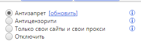
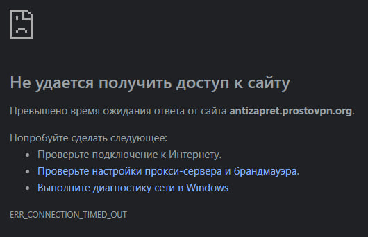

PAC-файл
Не открывается antizapret.prostovpn.org и не работает обход блокировок через PAC-файл (видимо, потому что он хранится на самом сайте). При этом VPN на телефоне работает.
Ошибка ERR_EMPTY_RESPONSE.
Firefox.
Сайт сломался вместе с доступом к PAC-файлу? В списке Роскомнадзора его нет.
+1. Видимо все упало.
Нужна помощь @ValdikSS
У меня тоже весь день не открываются сайты через прокси. Есть ещё какие-то варианты доступа с компьютера к тому же фейсбуку? Ошибку при этом не выдаёт, просто “Не удаётся открыть эту страницу”, через средства разработчика смотрел – тоже никакой ошибки не вижу, мб не туда смотрю.
Присоединяюсь. Не открывается http://antizapret.prostovpn.org/ а также и все заблокированные сайты. Прокси тю-тю.
Заработало. Вопрос, не повторится ли.
Видимо, заработало не у всех. Если вообще заработало. У меня вот по-прежнему ничего не работает.
{kind=link}
Присоединяюсь, та же проблема
у себя проблему вижу на ростелекоме и моб мегафоне, connection reset. На мелком провайдере всё работает, на иностранных провайдерах тоже работает.
Не работает официальный сайт Антизапрета https://antizapret.prostovpn.org в браузере Mozilla Firefox 89.0.2 под Windows 10 v1507:
{kind=link}
R.I.P. Антизапрет (2013-2023).
На yota сайт открывает через прокси
https://antizapret.prostovpn.org/proxy.pac перенаправляет на
https://cloudflare-ipfs.com/ipfs/QmWrbVLiHAJCGzMz34SVzVTp6Szg61yubpW56wHAmMoGXL/proxy-nossl.js, который не заблокирован, так что кто пользуется pac, можете вписать перенаправленный адрес. в хроме через расширение Proxy Switcher and Manager - Chrome Web Store работает
Да, РКН походу их основной сайт заблокировал.
Сам .pac по прямой ссылке работает.
Вбил в “URL автонастройки прокси” в браузере и в системе ссылку на перенаправление - вроде бы заработало.
Ну вы поняли, какие “добрые” слова я хочу сказать. Ждем реакции @ValdikSS на ситуацию, ну и его слова о будущем проекта.
Утром была ошибка empty response.
Сейчас открываю в браузере напрямую - работает.
Поиск по реестру не отображает сайт Антизапрета.
Может быть что collateral damage от чего-то. У меня некоторые другие сайты не прописанные в реестре тоже не открываются без прокси. Или не обновили публичную базу ещё.
какие сайты? GoodbyeDPI помогает, https://antizapret.prostovpn.org/ начинает работать, как и остальные заблок ркн-ом сайты. вообще хз безопасно ли тут писать про это…
заработало 12:00?
пока что нет
Как я понимаю, вариант с OpenVPN и импортированием профиля на Windows работает, как и на Android.
в хроме работает, в яндекс браузере, что странно, не работает. Как же … этот роскомпозор со своей цензурой на правду
upd: в яндекс браузере тоже работает, по крайней мере фейсбук проверил, но rutor.org работает только в хроме таким способом
Провайдер дом.ру
У меня ощущение что сам сайт антизапрета у себя не был внесен в список заблокированных сайтов )
Получилось получить доступ к https://antizapret.prostovpn.org на PC только после установки расширения Home · anticensority/runet-censorship-bypass Wiki · GitHub с настройками
- pac: антицензорсити;
- прокси: использовать свой Тор как прокси (да, нужен свой установленный и открытый Тор), либо использовать какой-то другой доступный вам прокси;
- добавление https://antizapret.prostovpn.org в исключения.
Господа! Пожалейте нуба - что делать-то теперь и потом? Мне, по сути, только Девиантарт нужен. Посоветуйте куда лезть, что читать, что ставить и как выкручиваться с впнами? А то мне дико неудобно просить художника регаться на том же бусти или клянчить у него общедоступные арты в личку…
Ну и в случае с полным блоком, по китайскому образцу - все, сушить весла? Почты хотя бы будут работать?
А он уже отвечал на этот вопрос, и сказал, что блокировка Антизапрета означает конец проекта.
Но ведь OpenVPN Antizapret продолжает работать у всех? То есть еще остается, что поддерживать.
Я не особо понимаю, что мешает ему перенести пак-файл на сервера гугла или майкрософта какого-нибудь, чтобы роскомнадзор не смог заблокировать ссылку на него…
Но ведь с технической точки зрения-то все работает, я проверял. Сайт заблокирован, это да, но ведь можно сделать новый/зеркало/еще как-то решить эту проблему. Так что рано пока еще говорить о смерти проекта.
Впрочем, на все воля местного самого главного, надеюсь, он посетит эту тему.
Теперь – адрес прокси в настройках поменять на упомянутый ранее:
После этого у меня лично всё заработало.
К сожалению, у меня прописанный в настройках PAC-прокси альтернативный адрес Антизапрета https://cloudflare-ipfs.com/ipfs/QmWrbVLiHAJCGzMz34SVzVTp6Szg61yubpW56wHAmMoGXL/proxy-nossl.js не работает в браузере Mozilla Firefox 89.0.2 под Windows 10 v1507 (x64). Рутрекер по-прежнему не открывается.
Спасибо за ответ, но можно как совсем для дурака? Я не очень понимаю, куда в Яндекс-бразуере эту ссылку прописывать? Если не сложно, можно в личку написать?
Значит, все-таки конец? Или это просто дружеский совет?
Спасибо всем ответившим. Значит буду искать и смотреть. Жаль. АЗ очень удобная штука.
в данный момент на РТ http - reset, https - ok. моб мегафон http/s - reset. СЗ
upd: до этого на РТ https был reset
upd: 14:00 РТ https - reset
upd: бред какой-то, уже 14:01 и https - ok, дальше следить не буду
А Вы случайно не разобрались, куда эту ссылку по итогу вставлять?
Хром, Вин7, обновилось и заработало.
Попробуйте расширение для браузера https://censortracker.org/, пока не заблокировано.
А вообще уже наверное пора всем готовить план Б - иметь браузер Тор на компуктере.
Тоже сидел репу чесал куда ссыль .js вставлять, ни в прокси-директ, ни в прокси настройки плагина оно не подключалось.
А потом хлоп и все вернулось на круги своя. АЗ работает.
У меня до сих пор так и не работает ни сайт,ни скрипт.
Попробуйте кэш почистить: см. Как очистить кэш в Хроме через DevTools? · anticensority/runet-censorship-bypass Wiki · GitHub.
Не помогло.
Мне помогло нажать на “Обновить” в кнопке расширения рядом со строкой “Антизапрет”

У меня тоже не работает. Чистка кеша не помогла. Кнопки обновить как на скрине выше, нет
У меня заработал.
Клик по синей ленте => На вкладке “PAC-скрипт” / “PAC-script” выбрать “Антизапрет” / “Antizapret”.
Такая настройка не поддерживается: упомянутый адрес pac-скрипта не будет обновляться. Лучше сменить его обратно на https://antizapret.prostovpn.org/proxy.pac.
@0ka, такой тип настройки не поддерживается: вы не будете получать обновлений PAC-скрипта, могут возникнуть проблемы с работоспособностью прокси-серверов.
Не работает, к сожалению ! Выдает ошибку при загрузке.
Видимо заблокировали Антизапрет.
У меня Google и десятое окно.
Этого стоило ожидать. Но я не думал, что решатся на подобное. Все же у нас под санкциями это может сильно навредить, ибо параллельный импорт любит обходить санкции при помощи VPN и Антизапрета.
Многие так YouTube оплачивают !
Судя по тому, что я вижу. Начались сподвижки. У меня сама программа начала работать, даже обновление скачало.
Однако к сожалению сайты до сих пор не открыть (((
Самое смешное, что мой провайдер из за особенностей серверов не дает мне зайти на ГосУслуги, или в Vk. Это связано с тем, что его выкупили в 2014 году, а ранее он принадлежал Украине. Теперь он Часть ДомРу, но у меня в СПБ работают Украинские ограничения, как и Российские. Мне сейчас надо зайти на ГосУслуги, а без Антизапрета я не могу ((((
Ростелеком.
antizapret.prostovpn.org намертво никак без сторонней помощи не открывается.
ERR_CONNECTION_RESET как при блокировке.
Скрипт не работает.
Не работает таким образом ничего, ни сам сайт, ни прокси. Может, у кого-то сайт и заработал, просто потому что провайдер местечковый и неважно блокирует, а так по прежнему ошибки и мрак (провайдер Риалком). Лучше уж через “неправильную” настройку заходить, она хоть работает; а обновлять ее или как-нибудь вручную, или… Хм, реально задуматься о переезде pac-файла на другой, незаблокированный адрес.
О!
Прописал в параметрах https://cloudflare-ipfs.com/ipfs/QmWrbVLiHAJCGzMz34SVzVTp6Szg61yubpW56wHAmMoGXL/proxy-nossl.js и пока заработало.
Извините за глупый вопрос, но куда именно это нужно прописать в плагине?
Недолго музыка играла.Опять перестало все работать.
В параметрах Windows10, Сеть, Прокси-Сервер.
Это не для плагина, см. другие способы настройки АнтиЗапрета на https://antizapret.prostovpn.org (надеюсь, ссылка у вас откроется).
Заработало само по себе. Центральная Россия.
Кстати, раз уж такая тема, то можно ли как-то ваш простовпн заставить работать с расширением? А то уже год как покупаю доступ, но едва пару мб трачу в месяц и он у меня лежит без какого-либо дела. Продлеваю на всякий случаи каждый раз.
Win7, хром, билайн. Какое-то время не получалось обновить, нажав на соотв. кнопку, но сейчас всё обновилось, сайты открываются. Не забрасывайте проект, пожалуйста. Он невероятно важен.
а какой порт?
Нужно прописать в настройках ОС адрес PAC-скрипта (автонастраиваемый прокси). Такая настройка не требует ввода порта.
Попробовал снова поменять прокси на “стандартные”, на этот раз все заработало. С чем связано не знаю - с провайдером, скорее всего. Буду смотреть, что случится дальше…
Спасибо @ilyaigpetrov и другим лидерам проекта за их труды на благо юзеров.
УПД: Иии… Опять не работает… А не, заработал. Скажите, а теперь что, есть 2 сайта, один из которых работает, а другой нет? Открываю тот, который указан через гитхаб - работает. Открываю ссылку, которая в посте PANDORUM_666 - не работает…
опять не работает, че какая странная блокировка, 2а часа работал , сейчас опять , вин7. дом.ру , хром
 Ошибка!
Ошибка!
Не удалось скачать PAC-скрипт с адресов: [ https://antizapret.prostovpn.org/proxy.pac , https://rebrand.ly/ac-antizapret-pac ]. > Что-то не так с сетью, проверьте соединение. > Failed to fetch [Техн.детали]
з.ы чего делать ? есть вероятность, что починят?
удалено
@111, открываются ли у вас данные сайты:
- по http: http://antizapret.prostovpn.org
- по httpS: https://antizapret.prostovpn.org
На каком из них какую ошибку вы получаете?
нет , не один
Не удается получить доступ к сайту
Соединение сброшено.
Попробуйте сделать следующее:
- Проверьте подключение к Интернету.
- Проверьте настройки прокси-сервера и брандмауэра.
- [Выполните диагностику сети в Windows](javascript:diagnoseErrors())
ERR_CONNECTION_RESET
2 разных PAC-скрипта: один от АнтиЗапрета antizapret.prostovpn.org, другой, Антицензорити, раздаётся через GitHub и требует Тора, либо же добавления своих прокси в расшрение.
См.:
Первый открывается, второй:

Аналогичная ситуация здесь, Северо-Западный регион Domru провайдер.
Прописал в win10 - Автомат. настройка прокси-сервера https://cloudflare-ipfs.com/ipfs/QmWrbVLiHAJCGzMz34SVzVTp6Szg61yubpW56wHAmMoGXL/proxy-nossl.js Не работает.
Данный тип настройки нами не поддерживается, требует ручного обновления и вызывает проблемы в работе прокси-серверов. Не пользуйтесь им, пожалуйста.
Так же не открываются сайты. Ростов-на-Дону, Ростелеком.
Как и в сообщениях выше - ошибка:
Не удается получить доступ к сайту
Соединение сброшено.
Попробуйте сделать следующее:
- Проверьте подключение к Интернету.
- Проверьте настройки прокси-сервера и брандмауэра.
- [Выполните диагностику сети в Windows](javascript:diagnoseErrors())
ERR_CONNECTION_RESET
Первый не работает, второй - работает
Мелкий провайдер, который работает на мощностях Билайна
Очень странно. Только это у меня и работает.
стоит надеятся , что заработает?=\
А всё. Перенаправление сделали.
При открытии https://antizapret.prostovpn.org/proxy.pac автоматически перенаправляет на https://cloudflare-ipfs.com/ipfs/QmWrbVLiHAJCGzMz34SVzVTp6Szg61yubpW56wHAmMoGXL/proxy-nossl.js
Перенаправление имеется уже давно, просто пункт назначения меняется каждые N часов, так устроено обновление PAC-скрпта в сети IPFS.
скрипт установился, обновился - нажал еще раз обновить опять ошибка )
Для пользователей расширения добавлена заметка “Нас блокируют. Что делать?”.
Можно задать вопрос по заметке? Как понять, скачивается ли PAC-скрип или нет? Я пользуюсь расширением на Firefox 110 и в системах (Win10, Win11), и никаких таких вкладок у меня там нет. Кстати, у меня лично работает второй сайт из указанных вами, по https, и доступ к заблокированным ресурсам обеспечивается. Это значит, что я попал в категорию тех “не не-всех”, которым помогли ваши старания?
Да, вам повезло, у вас всё работает.
На вкладке PAC-скрипт (см. личное сообщение со снимком) нужно выбрать АнтиЗапрет или нажать кнопку “[обновить]” рядом с этим пунктом. Если https://antizapret.prostovpn.org/proxy.pac заблокирован, то расширение выведет ошибку.
Connection reset. Очень похоже на блокировку.
Через globalcheck доступность плавает 50-83% от теста к тесту.
{kind=link}
Как же здорово, что в расширении “Обход блокировок Рунета” есть функция работы через Tor.
Опять перестали открываться все заблокированные сайты.Пробовал пак файлы с портами 8443 или 18443,все равно не работает.Провайдер Билайн.
Мегафон - Центральная россия, работает. Плагин обновляется.
Ростелеком. На роутере с OpenVPN постоянные переконнекты, смена ИП, в общем нормально не работает. При этом PAC файл работает нормально.
Если подключится с нужным ИП, то работает нормально.
Client: CONNECTED SUCCESS—
Local Address: 192.168.122.228
Remote Address: 192.168.122.228
На этом работает нормально пока, на других может и не работать.
Хватило не на долго, опять реконнекты со сменой ИП.
Log
Сводка
20230415 10:44:32 I SIGUSR1[soft connection-reset] received process restarting
20230415 10:44:32 Restart pause 1 second(s)
20230415 10:44:33 W NOTE: the current --script-security setting may allow this configuration to call user-defined scripts
20230415 10:44:33 I TCP/UDP: Preserving recently used remote address: [AF_INET]51.158.187.25:1194
20230415 10:44:33 Socket Buffers: R=[87380->87380] S=[16384->16384]
20230415 10:44:33 I Attempting to establish TCP connection with [AF_INET]51.158.187.25:1194
20230415 10:44:33 I TCP connection established with [AF_INET]51.158.187.25:1194
20230415 10:44:33 I TCPv4_CLIENT link local: (not bound)
20230415 10:44:33 I TCPv4_CLIENT link remote: [AF_INET]51.158.187.25:1194
20230415 10:44:33 TLS: Initial packet from [AF_INET]51.158.187.25:1194 sid=a1fc79aa 5f72856c
20230415 10:44:33 NOTE: --mute triggered…
20230415 10:44:33 7 variation(s) on previous 3 message(s) suppressed by --mute
20230415 10:44:33 I [antizapret-server-shared] Peer Connection Initiated with [AF_INET]51.158.187.25:1194
20230415 10:44:33 TLS: move_session: dest=TM_ACTIVE src=TM_INITIAL reinit_src=1
20230415 10:44:33 NOTE: --mute triggered…
20230415 10:44:34 1 variation(s) on previous 3 message(s) suppressed by --mute
20230415 10:44:34 SENT CONTROL [antizapret-server-shared]: ‘PUSH_REQUEST’ (status=1)
20230415 10:44:34 NOTE: --mute triggered…
20230415 10:44:34 6 variation(s) on previous 3 message(s) suppressed by --mute
20230415 10:44:34 Using peer cipher ‘AES-128-CBC’
20230415 10:44:34 I Preserving previous TUN/TAP instance: tun1
20230415 10:44:34 I NOTE: Pulled options changed on restart will need to close and reopen TUN/TAP device.
20230415 10:44:34 I /tmp/openvpncl/route-down.sh tun1 1400 0 192.168.105.15 255.255.248.0 init
20230415 10:44:34 net_route_v4_del: 10.224.0.0/15 via 192.168.104.1 dev [NULL] table 0 metric -1
20230415 10:44:34 net_route_v4_del: 103.246.200.0/22 via 192.168.104.1 dev [NULL] table 0 metric -1
20230415 10:44:34 net_route_v4_del: 178.239.88.0/21 via 192.168.104.1 dev [NULL] table 0 metric -1
20230415 10:44:34 net_route_v4_del: 185.104.45.0/24 via 192.168.104.1 dev [NULL] table 0 metric -1
20230415 10:44:34 net_route_v4_del: 193.105.213.36/30 via 192.168.104.1 dev [NULL] table 0 metric -1
20230415 10:44:34 net_route_v4_del: 203.104.128.0/20 via 192.168.104.1 dev [NULL] table 0 metric -1
20230415 10:44:34 net_route_v4_del: 203.104.144.0/21 via 192.168.104.1 dev [NULL] table 0 metric -1
20230415 10:44:34 net_route_v4_del: 203.104.152.0/22 via 192.168.104.1 dev [NULL] table 0 metric -1
20230415 10:44:34 net_route_v4_del: 68.171.224.0/19 via 192.168.104.1 dev [NULL] table 0 metric -1
20230415 10:44:34 net_route_v4_del: 74.82.64.0/19 via 192.168.104.1 dev [NULL] table 0 metric -1
20230415 10:44:34 Closing TUN/TAP interface
20230415 10:44:34 I net_addr_v4_del: 192.168.105.15 dev tun1
20230415 10:44:35 net_route_v4_best_gw query: dst 0.0.0.0
20230415 10:44:35 net_route_v4_best_gw result: via 94.50.136.1 dev ppp0
20230415 10:44:35 I TUN/TAP device tun1 opened
20230415 10:44:35 I net_iface_mtu_set: mtu 1400 for tun1
20230415 10:44:35 I net_iface_up: set tun1 up
20230415 10:44:35 I net_addr_v4_add: 192.168.114.242/21 dev tun1
20230415 10:44:35 net_route_v4_add: 192.168.104.1/32 via 192.168.112.1 dev [NULL] table 0 metric -1
20230415 10:44:35 net_route_v4_add: 10.224.0.0/15 via 192.168.112.1 dev [NULL] table 0 metric -1
20230415 10:44:35 net_route_v4_add: 103.246.200.0/22 via 192.168.112.1 dev [NULL] table 0 metric -1
20230415 10:44:35 net_route_v4_add: 178.239.88.0/21 via 192.168.112.1 dev [NULL] table 0 metric -1
20230415 10:44:35 net_route_v4_add: 185.104.45.0/24 via 192.168.112.1 dev [NULL] table 0 metric -1
20230415 10:44:35 net_route_v4_add: 193.105.213.36/30 via 192.168.112.1 dev [NULL] table 0 metric -1
20230415 10:44:35 net_route_v4_add: 203.104.128.0/20 via 192.168.112.1 dev [NULL] table 0 metric -1
20230415 10:44:35 net_route_v4_add: 203.104.144.0/21 via 192.168.112.1 dev [NULL] table 0 metric -1
20230415 10:44:35 net_route_v4_add: 203.104.152.0/22 via 192.168.112.1 dev [NULL] table 0 metric -1
20230415 10:44:35 net_route_v4_add: 68.171.224.0/19 via 192.168.112.1 dev [NULL] table 0 metric -1
20230415 10:44:35 net_route_v4_add: 74.82.64.0/19 via 192.168.112.1 dev [NULL] table 0 metric -1
20230415 10:44:35 I Initialization Sequence Completed
20230415 10:44:35 Data Channel: cipher ‘AES-128-CBC’ auth ‘SHA1’ peer-id: 0
20230415 10:44:35 NOTE: --mute triggered…
20230415 10:44:39 1 variation(s) on previous 3 message(s) suppressed by --mute
20230415 10:44:39 MANAGEMENT: Client connected from [AF_INET]127.0.0.1:53419
20230415 10:44:39 D MANAGEMENT: CMD ‘state’
20230415 10:44:39 MANAGEMENT: Client disconnected
20230415 10:44:39 NOTE: --mute triggered…
20230415 10:44:39 1 variation(s) on previous 3 message(s) suppressed by --mute
20230415 10:44:39 D MANAGEMENT: CMD ‘state’
20230415 10:44:39 MANAGEMENT: Client disconnected
20230415 10:44:39 NOTE: --mute triggered…
20230415 10:44:39 1 variation(s) on previous 3 message(s) suppressed by --mute
20230415 10:44:39 D MANAGEMENT: CMD ‘state’
20230415 10:44:39 MANAGEMENT: Client disconnected
20230415 10:44:39 NOTE: --mute triggered…
20230415 10:44:39 1 variation(s) on previous 3 message(s) suppressed by --mute
20230415 10:44:39 D MANAGEMENT: CMD ‘status 2’
20230415 10:44:39 MANAGEMENT: Client disconnected
20230415 10:44:39 NOTE: --mute triggered…
20230415 10:44:39 1 variation(s) on previous 3 message(s) suppressed by --mute
20230415 10:44:39 D MANAGEMENT: CMD ‘log 500’
20230415 10:44:39 MANAGEMENT: Client disconnected
20230415 10:44:45 NOTE: --mute triggered…
20230415 10:44:45 1 variation(s) on previous 3 message(s) suppressed by --mute
20230415 10:44:45 D MANAGEMENT: CMD ‘state’
20230415 10:44:45 MANAGEMENT: Client disconnected
20230415 10:44:45 NOTE: --mute triggered…
20230415 10:44:45 1 variation(s) on previous 3 message(s) suppressed by --mute
20230415 10:44:45 D MANAGEMENT: CMD ‘state’
20230415 10:44:45 MANAGEMENT: Client disconnected
20230415 10:44:45 NOTE: --mute triggered…
20230415 10:44:45 1 variation(s) on previous 3 message(s) suppressed by --mute
20230415 10:44:45 D MANAGEMENT: CMD ‘state’
20230415 10:44:45 MANAGEMENT: Client disconnected
20230415 10:44:45 NOTE: --mute triggered…
20230415 10:44:45 1 variation(s) on previous 3 message(s) suppressed by --mute
20230415 10:44:45 D MANAGEMENT: CMD ‘status 2’
20230415 10:44:45 MANAGEMENT: Client disconnected
20230415 10:44:45 NOTE: --mute triggered…
20230415 10:44:45 1 variation(s) on previous 3 message(s) suppressed by --mute
20230415 10:44:45 D MANAGEMENT: CMD ‘log 500’
19700101 05:00:00
Ростелеком. На роутере с OpenVPN перестали открываться все заблокированные сайты и постоянно отваливается интернет (в основном по wifi)
Сводка
Fri Apr 14 21:28:54 2023 daemon.warn dnsmasq[1]: Maximum number of concurrent DNS queries reached (max: 150)
Fri Apr 14 21:29:04 2023 daemon.warn dnsmasq[1]: Maximum number of concurrent DNS queries reached (max: 150)
Fri Apr 14 21:29:10 2023 daemon.warn dnsmasq[1]: Maximum number of concurrent DNS queries reached (max: 150)
Fri Apr 14 21:29:17 2023 daemon.warn dnsmasq[1]: Maximum number of concurrent DNS queries reached (max: 150)
Fri Apr 14 21:29:23 2023 daemon.warn dnsmasq[1]: Maximum number of concurrent DNS queries reached (max: 150)
Fri Apr 14 21:29:29 2023 daemon.warn dnsmasq[1]: Maximum number of concurrent DNS queries reached (max: 150)
Fri Apr 14 21:29:35 2023 daemon.warn dnsmasq[1]: Maximum number of concurrent DNS queries reached (max: 150)
Fri Apr 14 21:29:41 2023 daemon.warn dnsmasq[1]: Maximum number of concurrent DNS queries reached (max: 150)
Fri Apr 14 21:29:44 2023 user.info : luci: accepted login on /admin/status/logs for root from fd8a:2c63:cafb:0:f072:15b3:60ab:a98d
Fri Apr 14 21:29:47 2023 daemon.warn dnsmasq[1]: Maximum number of concurrent DNS queries reached (max: 150)
Fri Apr 14 21:29:53 2023 daemon.warn dnsmasq[1]: Maximum number of concurrent DNS queries reached (max: 150)
Fri Apr 14 21:29:54 2023 daemon.err openvpn(antizapret)[2014]: event_wait : Interrupted system call (code=4)
Fri Apr 14 21:29:54 2023 daemon.notice openvpn(antizapret)[2014]: net_addr_v4_del: 192.168.112.104 dev tun0
когда отключаю антизапрет все нормально работает, но на сайты приходится заходить через vpn…
Жаль… Некоторые сайты перестали работать 
В ночь с 29 на 30 июня 23г сайт антизапрет не работал неск часов, ни чз лендлайн, ни чз мобильный интернет.
Соотв невозможно было скачать профиль OpenVPN
https://antizapret.prostovpn.org/antizapret-tcp.ovpn
Оказалось, что ранее никто не догадался создать зеркала. Сейчас сайт заработал. Ранее в июне также были перебои с работой самого сервиса. Мобильный провайдер циклически разрывал соединение. Потом, слава Богу, все наладилось.
antizapret-tcp.ovpn (5,3 КБ)
Пожалуйста переложите профиль на публичное место, чтобы пострадавшие могли его найти и скачать в таких случаях…
Пробовали адреса с портами?
Нет, не пробовал, но заблокировать сайт по ip ничего не стоит. Непременно нужны зеркала. Впрочем и это поможет не надолго. Явно идет интеграция китайского опыта вычленения подозрительного трафика по шейпингу. Рано или поздно будут давить все, что движется. У аз явно есть рука, коль скоро его не трогают столько лет, но и его прикроют, когда прикроют остальных.
Какой смысл в зеркалах с antizapret-tcp.ovpn? Если сильно захотят заблокировать, то блокнут сразу и ip куда вся коннектятся.
Смысл в том, что сайт не работал, а сервис работал и мне нужен был ovpn для другого аппарата. Значит так тоже может быть, не?
Встаёт проблема: положили вы файл куда-то в другое место, а где размещать ссылку? Размещать её на самом antizapret.prostovpn.org рядом с оригиналом бессмысленно: юзер в вашем сценарии не может зайти на antizapret.prostovpn.org, чтобы скачать оригинальный файл, значит, он не сможет туда зайти и увидеть ссылку на зеркало.
Размещать где-то в другом месте - так это вы сами уже сделали выше, вот зеркало теперь есть.
Кроме того, можно выудить конфиг через архив Интернета: https://web.archive.org/web/https://antizapret.prostovpn.org